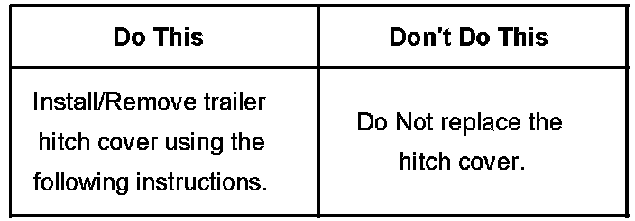
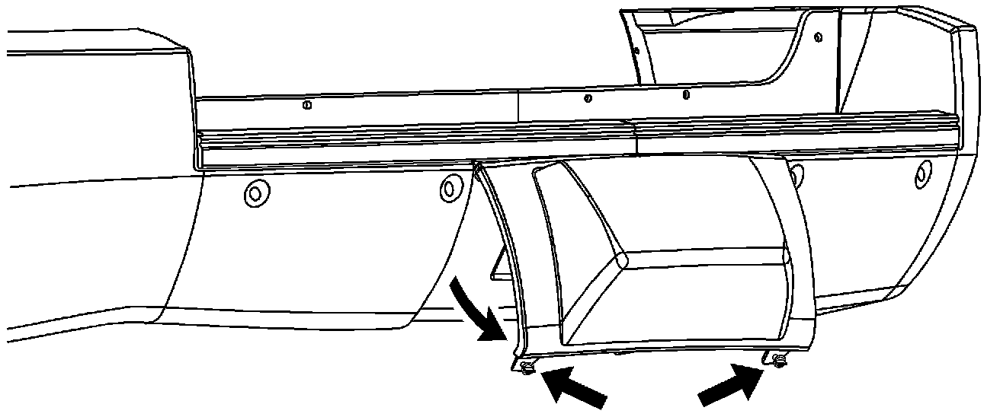
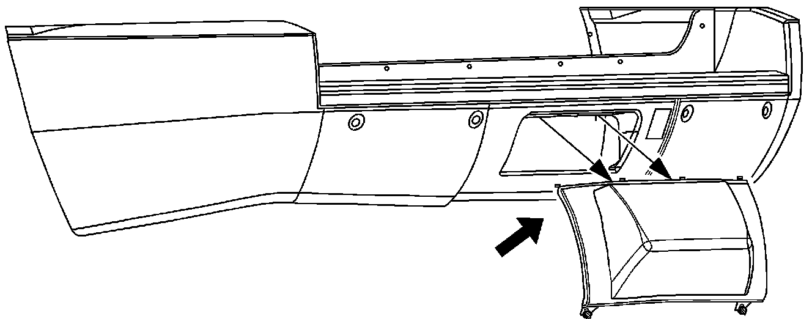
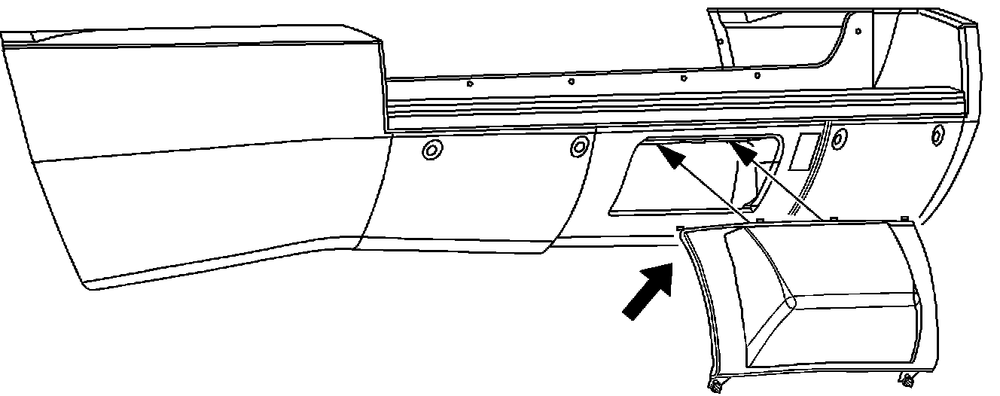
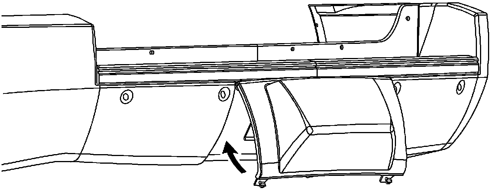
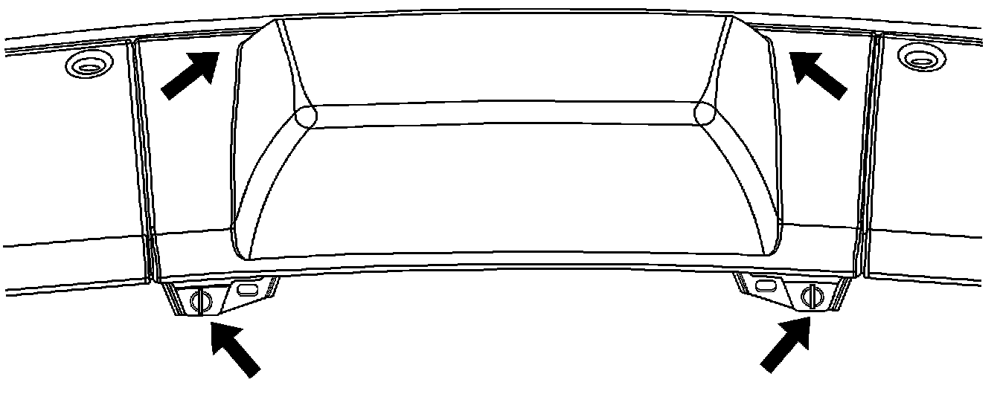

Body - Rear Bumper Trailer Hitch Access Hole Cover
Bulletin No.: 07-08-62-005Date: May 17, 2007
INFORMATION
Subject:
Proper Procedure for Removing/Installing Rear Bumper Fascia Trailer Hitch Access Hole Cover
Models:
2007 Cadillac Escalade, Escalade ESV
2007 GMC Denali, Denali XL
This bulletin is being issued to inform customers/dealers of the proper removal/installation procedures of the trailer hitch cover.
In order to avoid breaking the tabs and to achieve proper retention of the trailer hitch cover to the rear fascia, follow the procedure below.

Removing Trailer Hitch Cover

Turn the fasteners on the lower tabs 90 degrees counterclockwise. Grip the lower edge of the cover and rotate up and out approximately 45 degrees.

Disengage the upper attachments on the cover by pulling down.
Installing Trailer Hitch Cover

Hold the cover at a 45 degree angle to the vehicle and engage the upper tabs on the hitch cover into the chrome slots in the fascia.

Rotate the bottom of the cover forward until the lower tabs align with the lower fascia slots.

Snap the hitch cover into place by pushing the upper corners forward. In order to lock the cover into place, turn the fasteners 90 degrees clockwise.

Disclaimer